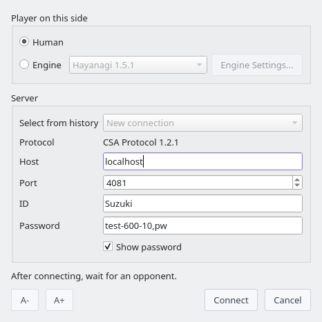
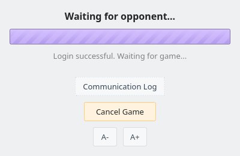
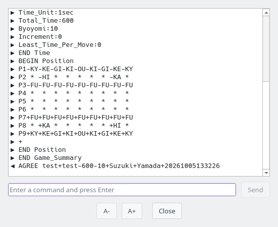
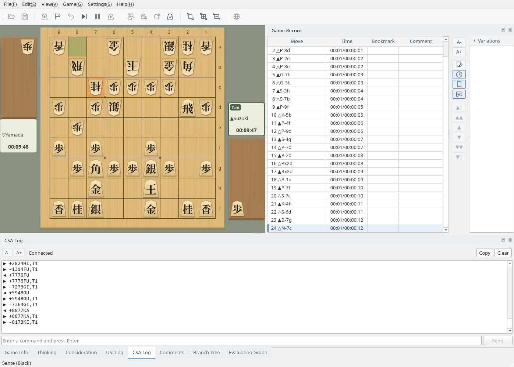
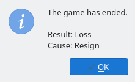

Network games with CSA protocol servers
Screenshots were captured on Linux with the English interface.
Set the server and the player on your side
Choose Game → Network Game (CSA)… to open the network game dialog. It is available when no game or analysis is running.
| Player on this side | Choose Human to play yourself, or Engine to let a USI engine play. Engines are those registered in Settings → Engine Settings, and Engine Settings... changes their options. |
| Select from history | Pick a server you connected to before (up to 10) to fill in Host, Port and ID. |
| Protocol | The connection uses CSA Protocol 1.2.1. |
| Host and Port | The server's host name or IP address, and its port (4081 by default). |
| ID and Password | Your login for the server. The password is not saved in the settings file. |
While a field is missing, a hint such as "Please enter the host address." appears at the bottom of the dialog and Connect stays disabled. Host, ID and password cannot contain spaces.

Network game dialog: settings for connecting to a local shogi-server as a human player
The server decides the time control and other conditions, so ShogiBoardQ has no settings for them. On shogi-server, enter game-name,password in the Password field. Two players who log in with the same game name play each other.
| Game name | name-time-byoyomi, with times in seconds. Example: test-600-10 is 10 minutes plus 10 seconds of byoyomi |
| Increment (Fischer) | Add F at the end to add time after every move instead of byoyomi. Example: test-300-10F |
| Preferred side | Append -B (Black) or -W (White) to the game name. Example: test-600-10-B,pw |
When shogi-server runs on your own computer, use localhost as the host and 4081 as the port.
Log in to the server and wait for an opponent
Clicking Connect opens the waiting window, which goes through connecting, logging in and waiting for an opponent. If the current game record is unsaved, you are first asked whether to discard it.
When an opponent is found, the server sends the game conditions, ShogiBoardQ agrees to them automatically, and the game starts. Cancel Game stops waiting and logs out.

Waiting: logged in and waiting for an opponent
Communication Log opens a window that shows what is sent to and received from the server. ▶ marks received lines and ◀ sent lines; the LOGIN password is shown as *****.
While connected, you can type a command in the field below and send it with Enter or Send. The log keeps up to 5000 lines.

Communication log: the game conditions (Game_Summary) have arrived and ShogiBoardQ has agreed with AGREE
Play on the same screen as in ordinary games
When you play as a human, click pieces on the board on your turn. The opponent's moves arrive from the server and appear on the board, and the game record lists each move with the time used. The clocks show the time control sent by the server.
The CSA Log tab at the bottom shows the traffic and the connection status. Copy copies the whole log, Clear clears the view, and you can send commands from the input field. The Game Info tab records the player names and the server's time control.

During the game: following the server traffic in the CSA Log tab
With Engine selected for the player on this side, the engine plays automatically within the server's time control. Thinking, USI Log and the Evaluation Graph are shown as in ordinary games.
Game → Move Now stops the engine's search and plays its best move so far. When the engine resigns, ShogiBoardQ sends a resignation to the server; when it declares entering king, the declaration is sent to the server.
On your turn, Resign, Abort and Entering King Declaration in the Game menu are sent to the server. A declaration is sent after you confirm it. They cannot be sent on the opponent's turn.
The server judges the result, time-outs and whether a declaration is valid. The game continues even if a clock on the screen reaches 0, until the server ends it. Servers that do not support aborting (such as shogi-server) may treat an abort as a foul.
When the game ends, the result and cause are shown and the final row (such as ▲Resign) is added to the game record. The record is not saved automatically, so save it from the File menu if you want to keep it. Afterwards you can replay the record or start another network game.
If the connection is lost or the engine can no longer return a move, the game ends as aborted.

End of the game: Result Loss, Cause Resign
Network games work with servers that support the CSA protocol